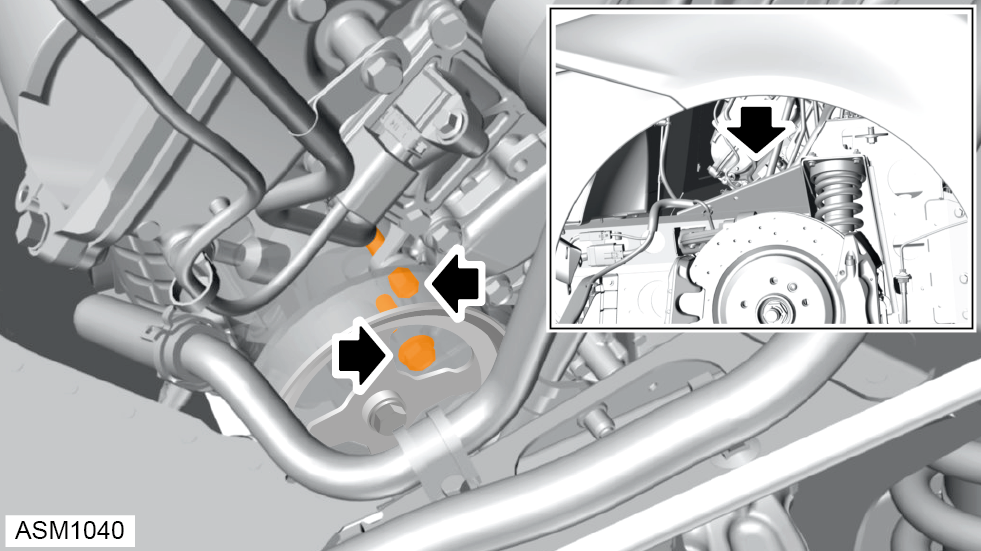

Power Assisted Steering (PAS) Pump - V6
Print
Operation Code: 32.03.23-02
Removal
- Release tension on auxiliary drive belt and remove from power steering pump pulley. Refer to procedure.
- Remove banjo bolt and discard washers (x2) from power steering pump. Torque 45 Nm.
NOTE: Always record quantity and fitted position of shims, washers, locktabs or clips.
- Remove power steering fluid hose and move aside.
 WARNING: Power steering fluid is a toxic substance and can be lethal if ingested.
WARNING: Power steering fluid is a toxic substance and can be lethal if ingested.
NOTE: Drain oil into a suitable container and dispose of appropriately.
- Disengage hose clamp securing power steering fluid hose to power steering pump.
- Remove hose from power steering pump and drain oil.
NOTE: Drain oil into a suitable container and dispose of appropriately.
- Install suitable transmission jack lift under engine/transmission assembly.
- Remove M12x90 bolt, nut and washer securing engine mount right side to vehicle. Torque 86 Nm.
- Remove M12x35 bolts (x2) securing front engine mount to vehicle. Torque 65 Nm.
- Remove M8x25 bolts (x2) securing engine mount right side to vehicle. Torque 24 Nm.
- Using transmission jack lift, raise engine/transmission assembly approximately 100 mm (4 in).

- Remove bolts (x2) securing power steering pump to engine. Torque 43 Nm.
- Remove power steering pump through wheelarch.
Installation
- Installation is the reverse of removal procedure except for the following:
- Renew discarded washers.
- Fill power steering system. Refer to technical data.
- Bleed power steering system. Refer to procedure.